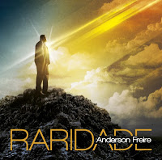

Anderson Ricardo Freire é um renomado cantor, compositor e pastor brasileiro de música cristã contemporânea, nascido em Cachoeiro de Itapemirim, Espírito Santo, no dia 22 de junho de 1981. Ele iniciou sua trajetória na infância compondo pequenas melodias e jingles, e mais tarde integrou a banda Giom ao lado de seus irmãos Adelso, Adilson e Dirceu, além de participar do Vocal Asafe. Antes de despontar como intérprete, ganhou enorme notoriedade nos bastidores c omo um dos compositores mais requisitados do meio gospel, escrevendo sucessos para grandes nomes do segmento. Em 2011, iniciou sua carreira solo ao assinar com a gravadora MK Music e lançar o álbum Identidade, que alcançou grande sucesso nacional.

"Raridade"
é um dos maiores fenômenos da música gospel brasileira. Lançada em 2013 pelo cantor e compositor Anderson Freire, a canção dá nome ao seu segundo álbum de estúdio e se tornou uma das faixas religiosas mais tocadas e regravadas do país. A música alcançou uma marca histórica ao receber a certificação de Disco de Diamante, com mais de 300 mil cópias vendidas, além de render ao artista uma indicação ao Grammy Latino.